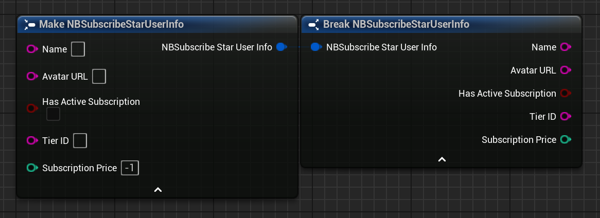

BP Struct: SubscribeStar User Info
| C++ Struct | FNBSubscribeStarUserInfo |
|---|

Contains basic information about a user from the SubscribeStar API. This is meant as a convenience to cover the information most applications might need (e.g. to unlock specific content for users subscribed to a particular tier or to display information about their subscription to a user).
If the information contained here doesn't cover your needs, please feel free to contact me at nbpsup@gmail.com
Additionally, you can send a custom query to the SubscribeStar API to get any other data you need with the UNBQuerySubscribeStarAPIAction.
Properties
-
NameStringTher user's nickname.
-
Avatar URLStringIf set, contains a URL you can use to download the user's avatar image.
-
Has Active SubscriptionBoolIndicates whether this user is currently subscribed to your campaign or not.
If this is
false, then either the user has never subscribed to your campaign before, or their subscription is currently inactive for some reason (e.g. payment processing problems).If this is
false, fields related to subscription details should not be used. -
Tier IDStringIf you have separate subscription tiers and the user is subscribed to one, this contains the ID of the tier they are subscribed to.
-
Subscription PriceIntThe current subscription price (in cents) the user is paying.
For any questions, help, suggestions or feature requests, please feel free to contact me at nbpsup@gmail.com